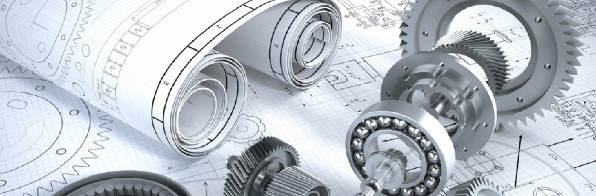

Gears are such a common simple machine that it’s hard to think there was ever a time before they were used. But just like the wheel or any other man-made invention, gears had a starting point, and a course of evolution over thousands of years that have led to their current state today.
It’s hard to say when the first gear was developed, but some of our earliest records point back to around 2700 BCE, with gears featuring in a device called the Chinese South-Pointing Chariot. This chariot featured a gear that would automatically turn a directional arrow so it always pointed south, no matter which way the chariot itself turned. It was one of the earliest ways to gauge cardinal directions without the use of magnets.
Gears were also formally mentioned by Aristotle in some of his writings around 400 BCE. He described gears as capable of reversing the direction of momentum, and we’ve found artifacts dating back almost this far with gears as central components, such as in wheels and rudimentary clocks. Gears also featured prominently in inventive sketches by Leonardo da Vinci, circa 1500.
By the 1600s, scientists and engineers were figuring out mathematical concepts like velocity ratios and involute curves, allowing them to use gears for more complex and more heavy-duty tasks, but it wasn’t until the 1800s when the first form cutters and gear hobbing machines emerged, allowing gears to be mass-produced and refined in terms of form and performance.
The next major step forward was in 1897, when Herman Pfauter invented a machine that could cut both traditional “spur” gears and helical gears, driving production further forward. Over the next hundred years or so, the development of NC hobbing machines and full 6 axis machines would start to perfect how we design, cut, and manufacture gears.
Today, gear manufacturers primarily use CNC machines to cut gears from blanks, and our level of precision is driven by sophisticated design software and advanced engineering theories. Modern gears are exceptional pieces of work, capable of lasting centuries (or longer, if cared for properly), and technology continues to advance to bring us better ways of producing gears.